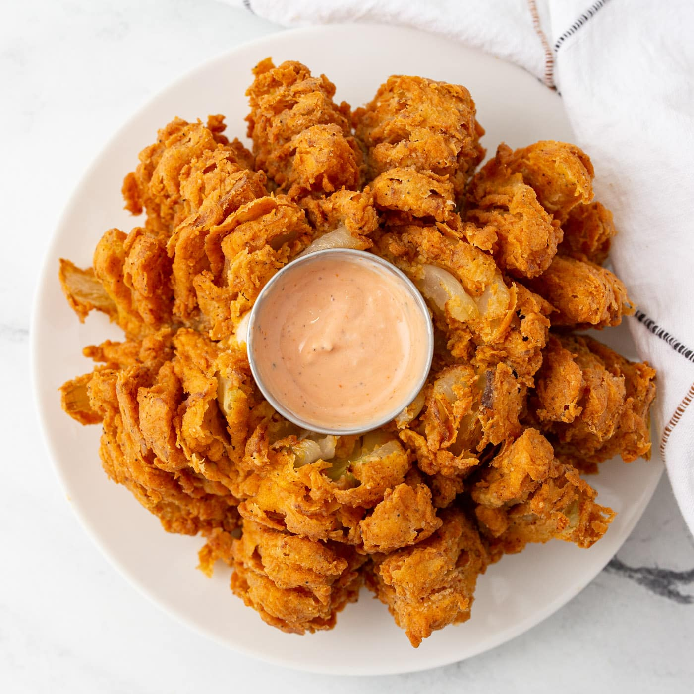

Blooming Onion

Description
One of my favorite deep fried treats! Nothing beats a blooming onion for dinner. A don't get me started on the blooming onion sauce you make with this dish.
Blooming Onion Ingredients
- large yellow or white onion
- all purpose flour
- milk
- paprika
- cayenne pepper
- garlic powder
- oregano
- salt
- pepper
Dipping Sauce Ingredients
- mayonnaise
- creamy horseradish
- ketchup
- paprika
- garlic powder
- dried oregano
- black pepper
Meal Prep Steps
- Cut large onion so that it blooms
- Put under cold water and help open peddals without breaking them
- Mix all purpose flour, paprika,cayenne pepper, garlic powder, oregano, salt, and pepper
- Mix eggs and milk in bowl
- Dip blooming onion into egg and milk mixture then into the powder mixture
- Do step 5 again
- Put blooming onion in freezer to harden
- Heat vegetable oil in pot
- Once boiling dip cold blooming onion into oil for 4 minutes on each side
- While cooking, mix all sauce ingredients together
- Once blooming onion is golden brown, remove from oil and dry off oil with paper towel
- Serve with dipping sauce and enjoy!